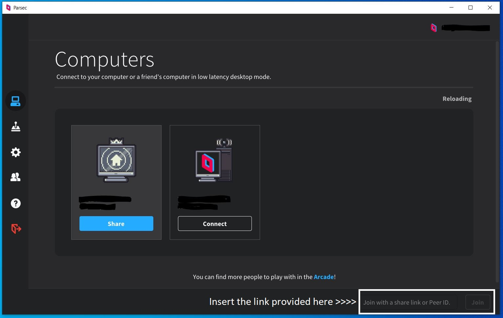
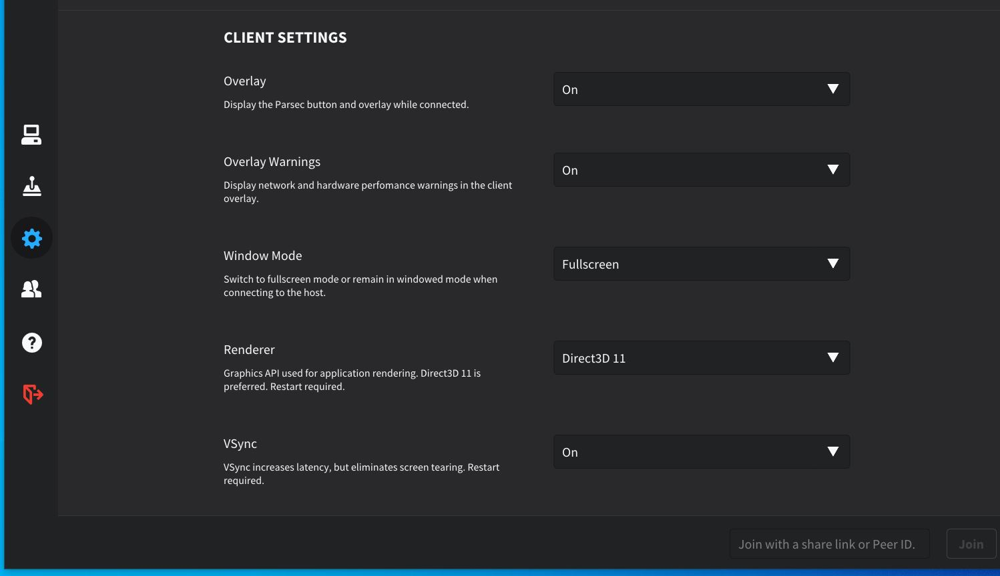
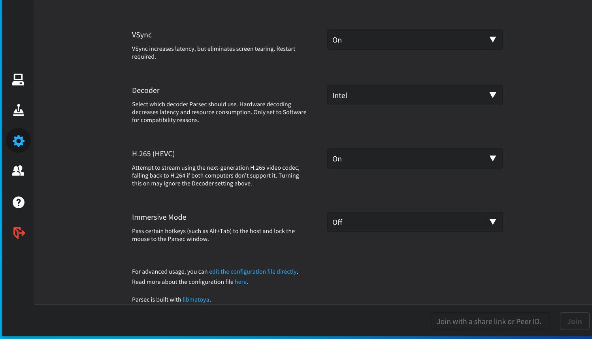

Games will be on steam PC or Parsec. Matches Will ethier be First to 2 or First to 3
Pick any character before match starts, once the character is picked and you’re winning in the first to 2 then you cannot change characters, but if you’re losing in the first to 2 out of 3 then you can switch your character.
all matches are self-reported, and it’s recommended to stream/record or take a screenshot of your own matches after each win/lose so you have proof of what happened. If there is a dispute where both players cannot report the same results then we would be forced to DQ both players since there is no way of knowing who is correct unless you stream, record or take a screenshot of the match.
Anything that has been donated will go to the Matcherino where either 1st place gets everything or if the prize pool is big enough then 1st, 2nd and third will get a prize. The Matcherino page will be made when something has been donated.
For people that use a keyboard please visit this guide on how to use your keyboard as a virtual controller: Here
What you need to play on parsec
Make sure to download parsec software and paste the provided link inside the bottom right corner to connect. (DO NOT PASTE IT IN A WEB BROWSER)


